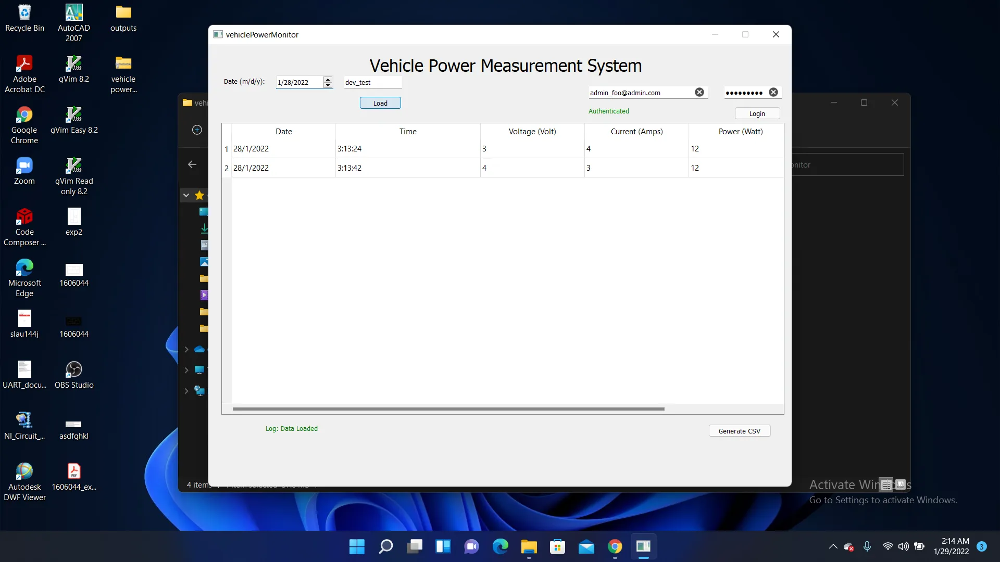

Projects ----> [THIS PAGE IS UNDER CONSTRUCTION]
-
All my projects are currrently slightly unorganized. So I haven't logged all my projects in this site. Soon they will be organized and updated here. Currently you can have a look at some of my projects
in my Github profile.
- Robotic Arm with Computer Vision for Sorting Objects Based on Their Shapes
- Track Me - Vehicle Tracking System
- Flappy Bird - RL Agent
- Privacy preserving GPS with open street map interface
- MSP430 - Drivers


This project was done as part of a competition organized by BUET Robotic society. Our team was champion in the competition. We utilized Image Processing Techniques to determine the shape of objects on a running conveyor belt while a robotic arm kept sorting objects. Later, the project was also showcased on "Digital Bangladesh 2017". Details of the project can be found here.


This project is the design of a vehicle tracking system. This hardware is connected to several sensors: voltage measurement, current measurement, accelerometer, GPS and bluetooth. It is connected to the internet through GSM technology. It directly pushes data to google firebase through MQTT communication.
Users can integrate this device with their vehicles to monitor and track the movement, voltage level etc of their vehicles. The driver APK file can be found here: here.
The schematic files can be found here: here. An extension of this project is to monitor the power consumption of vehicles. This device can be interfaced with our power monitoring application to access a realtime database to monitor the power consumption of vehicles.

I did this project as part of my personal interest in the field of Reinforcement Learning. This autonomous agent was powered by Deep Q-Learning. It was trained on my CPU and it took pretty long time to train. :3
This project was a part of micro-processor lab course during 4th year of my undergraduate program at BUET. The system efficiently incorporated IoT and web frameworks to establish an interesting tracking system. For more information, click here

This Repository contains drivers for MSP430 micro-controller family designed in C/C++.